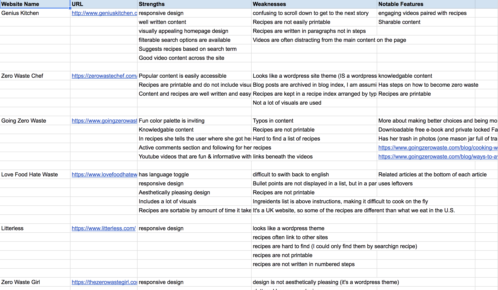

About
Garbage Kitchen was created and developed at the University of Miami as a part of the School of Communication's Interactive Media M.F.A. program. by Rori Kotch. Over the course of a semester, all recipes were developed, cooked, documented, and more.
For all inquiries please email: rorikotch at gmail dot com
The Process
Step 1
The first part of the process was creating a concept map of the entire site to see how things could be related. While creating my concept map I was able to explore new ideas and concepts that I may not have thought of if I just went straight into the human-centered design process
Step 2
The second step of the process was to complete a competitive analysis of other websites and companies that have a similar idea or mission. I completed my competitive analysis using a google sheet. To view the full competitive analysis click here.
Step 3
After completing the competitive analysis I was able to move onto task flows. Task flows helped me determine the flow of the website as a whole and what tools I needed to develop in the future.
Step 4 & 5
Once my task flows were complete I was able to start sketching. Sketching helped me ideate even further, which is always good. The low-fidelity wireframes show the bare bones of the site and its structure, and once those were done I was able to move onto high-fidelity wireframes, which are pictured below.
Step 6
After high-fidelity wireframes were complete I started coding the site! The first step of the coding process was to purchase a domain name (I used NameCheap.) I linked my Github to my domain using Github pages and then I was able to code away!
Step 7
Development